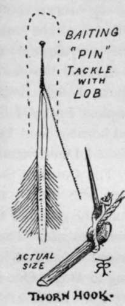
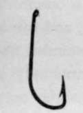

Flounders
Description
This section is from the book "Sea Fishing", by John Bickerdyke. Also available from Amazon: Sea Fishing.
Flounders
Flounders are termed Pleuronectes flesus by naturalists, and flounders, flecks, butts, black backs, and lanterns by common persons. In Norway I noted that the term flyndre was applied to several varieties of flat fish. It has been suggested that the word is derived from the Swedish flundra. They are peculiar among flat fish in ascending rivers for a considerable distance, and even at times adopting a freshwater existence. They seem able to live in highly polluted water, and I have caught them in noxious places where, judging by the colour of their uppermost side, the bottom must have been black mud.
At one time there were great quantities living in the lower reaches of the Thames, and attempts have been made of late years to reintroduce them, but so far without much success.
But, though natural history, this is not exactly the natural history of the flounder, to which let us return. Our fish is found principally at the mouths of rivers and muddy creeks ; and that he ascends fresh water for a considerable distance, more particularly in times of flood, is unquestionable. According to Yarrell, flounders pushed up the Thames as far as Sunbury. They abound all round the British coasts in suitable places, and are particularly plentiful in the north. Their number is no marvel, for in a fish of 24 1/4 ounces 1,357,400 eggs have been counted. The breeding season is during the spring.
In some parts of Europe flounders are fattened for the table. A water souchee of them is a celebrated dish, but sometimes they are not worth eating, their condition depending on their food. Thames flounders are, or were, celebrated, and their principal food would be shrimps, baby crabs, and the refuse of a big city. As to size, one of six pounds has been recorded, but half a pound to a pound and a half is the more common weight. In shallow waters, near their spawning grounds, and where they pass the early portions of their existence, the general run of fish caught is even smaller.
There are very few of the ordinary sea-fish baits which flounders will not take, among the best being soft crab, lugworms, tail of hermit crab, mussels, pieces of mackerel, and, in fresh or brackish water, earthworms. I have, indeed, used earthworms in the sea for both flounders and sand dabs, but they soon die in salt water. Perhaps the best tackle is that shown on p. 243, but personally I prefer to fish with a two-hook paternoster, with one hook just resting on the bottom ; then the bite can be felt at once, and one is not so much troubled with the fish gorging the hook as in those tackles in which two or three hooks attached to rather a long snooding lie on the bottom.
There is a method of fishing for flounders without a hook. A common pin about an inch long is the substitute. It should be of rather fine wire. To its centre is knotted or whipped a piece of very fine silk line, which corresponds to the hook link of gut in the paternoster tackle. The arrangement is baited by hiding the pin in a piece of a lobworm. When the fish swallows this, and the silk line is pulled tight, the pin takes up a transverse position in its throat. The pin is sufficiently strong to enable the flounder to be brought to the surface and lifted into the boat with or without the assistance of the landing net. To disengage the fish it is only necessary to pull the silk line, when the pin bends in the middle. It has to be bent straight again before being rebaited. To get these pins into the piece of worm is a little difficult. The way of it is to place the pointed end of the pin in the quill feather of some bird, such as a rook, partridge, or fowl. The worm can then be easily slipped over the head of the pin right down over the quill, which is withdrawn, leaving the pin in the centre of the worm. Personally I prefer to use a hook, but this arrangement, which appears to me to give unnecessary pain to the fish, is much favoured by some anglers. In the Thames estuary, on the coast of Essex, thorn hooks are still used. The form of these curious contrivances, which we should expect to find among aborigines rather than in English waters, will be understood from the illustration. Each thorn has about an inch of lugworm twisted round it, and the lines so baited are laid about fifty yards from the shore at low tide.
With the two-hook paternoster, using hooks of the size shown in the illustration, one can feel a bite and strike at once, as a rule hooking the fish in the mouth. The lead should not be heavier than is required to hold the bottom. A professional method of catching flounders is to moor the boat in a tideway, and throw out from it half a dozen lines rather heavily leaded, below the lead being a long snooding bearing three, four, five, or six hooks. This, when lowered, streams out in the current and lies flat along the bottom. The lines are hauled from time to time, the fish taken off, and rebaited. It is in effect a drift-trot on a small scale, and to my mind is less a tackle for the sportsman than for the professional fisherman, whose only aim is to catch as many fish as possible in the shortest time.
Pin Tackle For Flounders And Thorn Hook (Actual size).
Hook For Flounders.
This brings me to the end of all the side-swimming flat fish worthy of note for our particular purpose ; but there are, as I have already hinted, other flat fish which have not the remarkable peculiarity of twisting an eye from one side of the head to the other in childhood's days. Neither have they the perpetual sneer of the sole, but, on the other hand, possess features by no means devoid of expression, and tails which many a dog might envy. These are the skates and rays, of the important family named Raiidae.
The sometimes sinister-, sometimes merry-, looking mouths of these fish, as well as their gills, are on their bellies. Nature having found this an inconvenient arrangement, especially as regards the breathing apparatus, added breathing holes on the top of the head, through which water is taken to the gills. In most other fish water enters by the mouth and is expelled through the gills. The eggs of these fish are as eccentric as their layers, being contained in dark indiarubber-looking purses, in shape something like—well, I can think of no better simile than a Spanish priest's hat. Dogfish have similar cases to their eggs, and, as with the skates and rays, the egg is fertilised in the body of the female. In the egg of the dogfish the four points of the egg case are continued in little tendrils. In some places the children call the curious egg cases of the Raiidoe skate barrows. They are frequently picked up along the seashore.
As food the skates and rays are not everywhere in high repute, though crimped skate is now deemed a luxury by some people. In the Hebrides I found the people eating a pungent and horrible food known as ' sour skate,' the sourness being effected, I understand, by simply keeping the fish until it goes bad.
Continue to:
Tags
fishing, hooks, bait, fishermen, spanish mackerel, mackerel fishing